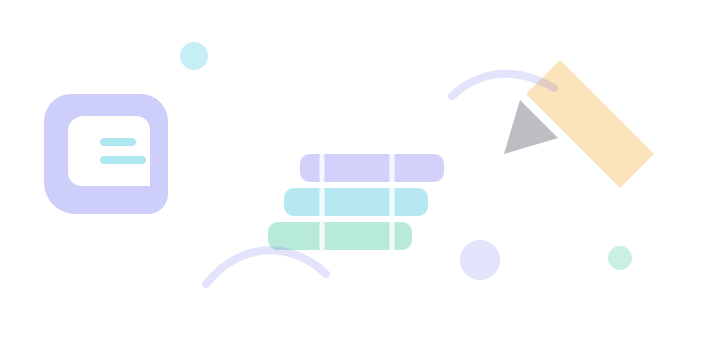

EduManage ProSchool ERP · دليل الاستخدام والاستفادة
كتاب شرح تطبيق إدارة المدرسة
دليل عملي للإدارة والمعلمين وأولياء الأمور والطلاب لفهم ميزات النظام، تنظيم البيانات، والاستفادة اليومية من أدوات EduManage Pro.
01إدارة أكاديمية متكاملة
02واجهات مرنة لكل دور
03تقارير وخطط قابلة للطباعة
الإصدار: مايو 2026
مصمم بهوية EduManage Pro البصرية